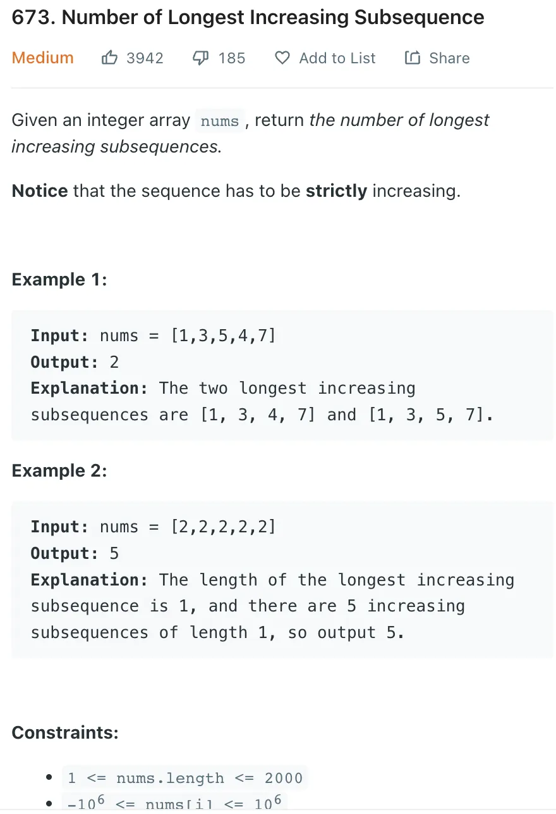

673. Number of Longest Increasing Subsequence
考過的公司：Bytedance
Question

✍🏽 My Solution
Solution #1 [DP]
Runtime: 35 ms, faster than 46.11% of Java online submissions for Number of Longest Increasing Subsequence. Memory Usage: 44.2 MB, less than 60.60% of Java online submissions for Number of Longest Increasing Subsequence.
class Solution {
public int findNumberOfLIS(int[] nums) {
int n = nums.length;
int max = 1;
int[] dp = new int[n];
int[] count = new int[n];
Arrays.fill(dp, 1);
Arrays.fill(count, 1);
for (int i = 1; i < n; i++) {
for (int j = 0; j < i; j++) {
if (nums[i] <= nums[j]) continue;
// 第一次找到，说明 dp[i]会被dp[j]+1直接更新，此时同步直接更新dp[i]=dp[j]+1,cnt[i]=cnt[j] 即可；
if (dp[i] < dp[j] + 1) {
dp[i] = dp[j] + 1;
count[i] = count[j];
} else if (dp[j] + 1 == dp[i]) { // 再次找到
count[i] += count[j];
}
}
max = Math.max(max, dp[i]);
}
int res = 0;
for (int i = 0; i < n; i++) {
if (dp[i] == max) {
res += count[i];
}
}
return res;
}
}
Explanation (in my words)
- What is the space/time complexity of their solution?
- time:O(n^2)
- space: O(n)